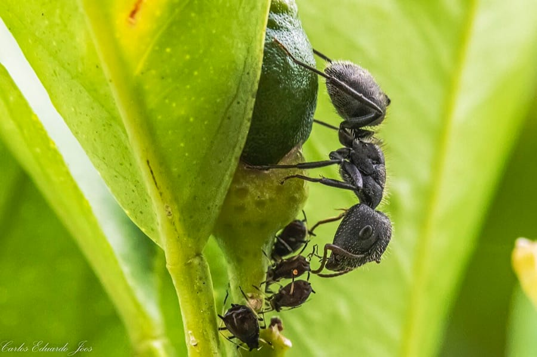
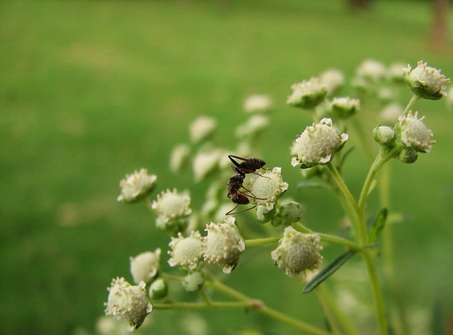
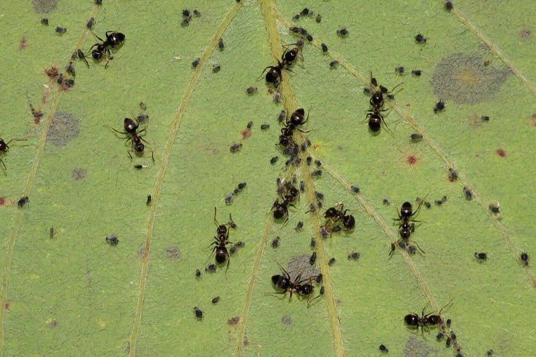

یک ردیف مورچه که از درز کابینت تا ظرف شکر کشیده شده، صحنهای آشنا در بسیاری از خانهها است؛ اسپری میزنید، چند روز خبری نیست و دوباره از همان مسیر برمیگردند. دلیلش ساده است: شما فقط کارگرها را میبینید، در حالی که ملکه و هزاران تخم در لانهای پنهان مشغول تولید نسل بعدی هستند. در این راهنما انواع مورچههای خانگی رایج در ایران، دلیل ورودشان به خانه، روشهای خانگی و محدودیتهایشان و روند طعمهگذاری و سمپاشی تخصصی مورچه را کامل بررسی میکنیم.
شناخت مورچههای خانگی رایج در ایران
بیش از دوازده هزار گونه مورچه در جهان شناسایی شده، اما فقط چند گونه به خانهها راه پیدا میکنند و شناختن همین چند گونه، نیمی از مسیر دفع است؛ چون روش مبارزه با هر کدام متفاوت است. مورچه حشرهای اجتماعی است: هر کلنی یک یا چند ملکه تخمگذار دارد و صدها تا هزاران کارگر که غذا جمع میکنند. آنچه شما در آشپزخانه میبینید فقط کارگرها هستند؛ قلب کلنی همیشه جای دیگری پنهان است.
| ویژگی | مورچه سیاه باغی | مورچه فرعون | مورچه نجار |
|---|---|---|---|
| اندازه و رنگ | ۳ تا ۵ میلیمتر، سیاه یا قهوهای تیره | حدود ۲ میلیمتر، زرد تا کهربایی | ۶ تا ۱۲ میلیمتر، سیاه یا سیاه و قرمز |
| محل لانه | خاک حیاط و باغچه، زیر سنگفرش و درز کف | داخل ساختمان؛ پشت پریز، شکاف دیوار، جاهای گرم | چوب مرطوب و پوسیده؛ چارچوب در و پنجره |
| غذای موردعلاقه | مواد قندی و شیرین | همهچیزخوار؛ چربی، پروتئین و شیرینی | شیره گیاهی، حشرات و مواد قندی |
| نکته مهم در دفع | لانه بیرون خانه است؛ مسیر ورود را باید بست | اسپریزدن باعث چندپاره شدن کلنی میشود | بدون رفع رطوبت و چوب آسیبدیده برمیگردد |
چرا مورچهها وارد خانه میشوند؟
مورچههای کارگر برای پیدا کردن غذا و آب مدام محیط اطراف لانه را جستجو میکنند. وقتی یک کارگر منبع غذایی پیدا کند، در مسیر برگشت ردی از فرومون (ماده شیمیایی علامتگذار) به جا میگذارد و بقیه کارگرها همین رد را دنبال میکنند؛ به همین دلیل مورچهها را همیشه در یک خط منظم میبینید. خردههای نان، قطرههای شربت و عسل، ظرف غذای حیوان خانگی، سطل زباله بدون درب و حتی چکه کردن شیر آب کافی است تا این بزرگراه فرومونی به آشپزخانه شما ختم شود. گرمای تابستان و خشکی هوا نیز مورچهها را برای یافتن آب و خنکا به داخل ساختمان میکشاند.
نشانههای وجود لانه مورچه در خانه
- ردیفهای منظم مورچه: مسیر ثابت و تکرارشونده از درز دیوار یا قرنیز به سمت منبع غذا.
- تپههای خاک ریز: کنار درز سنگفرش حیاط، گلدانها یا شکاف کف؛ ورودی لانه مورچه سیاه باغی.
- خاکاره ریز پای چارچوبهای چوبی: نشانه فعالیت مورچه نجار در عمق چوب.
- مورچههای بالدار در فصل گرم: پرواز جفتگیری ملکهها و نرها؛ علامت وجود کلنی بالغ در نزدیکی.
- دیدن مورچه در چند نقطه دور از هم: در مورد مورچه فرعون، احتمال وجود چند لانه خواهری در ساختمان.
خطرات مورچه برای سلامت و ساختمان
مورچه مانند پشه ناقل مستقیم بیماری نیست، اما بیضرر هم نیست:
- آلودگی مواد غذایی: مورچهها هنگام عبور از زباله، فاضلاب و سطوح آلوده، باکتریها را بهصورت مکانیکی روی غذا و ظروف منتقل میکنند.
- آفت بهداشتی مراکز درمانی: مورچه فرعون به دلیل لانهسازی داخل ساختمان و جستجوی مواد پروتئینی، در بیمارستانها و آشپزخانههای صنعتی آفت جدی محسوب میشود.
- آسیب به سازههای چوبی: مورچه نجار برخلاف موریانه چوب را نمیخورد، اما برای لانهسازی آن را حفر میکند و به مرور چارچوب در و پنجره و کفپوش چوبی را ضعیف میکند.
- گزش و حساسیت: برخی گونهها هنگام احساس خطر گاز میگیرند و در افراد حساس، خارش و التهاب پوستی ایجاد میکنند.
- آسیب به اعتبار کسبوکار: دیده شدن ردیف مورچه در رستوران، قنادی یا کافه برای مشتری یعنی ضعف بهداشت.
راههای پیشگیری از ورود مورچه
- مواد قندی، عسل، شربت و حبوبات را در ظروف دربسته نگهداری کنید و خردههای غذا را بلافاصله تمیز کنید.
- سطل زباله را دربسته نگه دارید و شبها خالی کنید؛ ظرف غذای حیوان خانگی را پس از غذا خوردن بردارید.
- درز و شکاف قرنیز، دور لولهها، چارچوب پنجره و محل ورود کابلها را با درزگیر مسدود کنید.
- چکه کردن شیرها و نمزدگی زیر سینک را رفع کنید؛ رطوبت هم آب موردنیاز مورچه را تأمین میکند و هم چوب را برای مورچه نجار جذاب میکند.
- شاخههای درختان و گیاهان رونده را که با دیوار و پنجره تماس دارند کوتاه کنید؛ این شاخهها پل ورود مورچه به خانه هستند.
- مسیر عبور مورچهها را با آب و مایع ظرفشویی بشویید تا رد فرومونی پاک شود و کارگرهای بعدی مسیر را گم کنند.
روشهای خانگی دفع مورچه و محدودیتهای آنها
محلول آب و سرکه یا آب و مایع ظرفشویی برای پاک کردن رد فرومونی مؤثر است و پاشیدن دارچین، فلفل یا پودر قهوه در محل ورود، مدتی مورچهها را دور نگه میدارد. این روشها برای مزاحمتهای کوچک و موقتی ارزش امتحان دارند.
اما واقعیت را باید گفت: هیچکدام از این روشها به ملکه و لانه نمیرسند. تا وقتی ملکه زنده است، کارگرهای تلفشده ظرف چند روز جایگزین میشوند و مسیر جدیدی پیدا میشود. خطرناکتر اینکه اسپریهای دورکننده در مواجهه با مورچه فرعون نتیجه معکوس دارد؛ کلنی تحت استرس به چند کلنی کوچکتر تقسیم میشود (پدیدهای که به آن جوانه زدن کلنی میگویند) و به جای یک لانه، با چند لانه در نقاط مختلف خانه طرف میشوید. اگر مورچهها هر بار برمیگردند یا در چند نقطه خانه دیده میشوند، وقت اقدام تخصصی است.
طعمهگذاری و سمپاشی تخصصی مورچه در آرام محیط البرز
آرام محیط البرز با مجوز رسمی وزارت بهداشت، درمان و آموزش پزشکی و مدیریت مهندس فاطمه براتی، کارشناس بهداشت محیط، دفع مورچه را در منازل، رستورانها و مراکز درمانی به این ترتیب انجام میدهد:
۱. مشاوره و بازدید رایگان
کارشناس گونه مورچه را شناسایی میکند، مسیرهای تردد را دنبال میکند تا محل لانهها مشخص شود و هزینه و روش کار را پیش از شروع بهصورت شفاف اعلام میکند. تشخیص درست گونه، مهمترین قدم است؛ روشی که مورچه سیاه باغی را ریشهکن میکند، ممکن است کلنی مورچه فرعون را پراکنده کند.
۲. طعمهگذاری و سمپاشی هدفمند با سم مجاز
بسته به گونه و محل لانه، از طعمه ژل تخصصی استفاده میشود که کارگرها آن را مانند غذا به لانه میبرند و به ملکه و لاروها میرسانند؛ در کنار آن، مسیرهای ورود و کانونهای بیرونی با سموم ابقایی دارای مجوز وزارت بهداشت تیمار میشود. همه مواد در نقاط دور از دسترس کودک و حیوان خانگی قرار میگیرند.
۳. ضمانت کتبی و پیگیری
پس از پایان کار، ضمانتنامه کتبی دریافت میکنید و توصیههای پیشگیری آموزش داده میشود؛ در صورت مشاهده مجدد فعالیت در دوره ضمانت، عملیات تکمیلی انجام میشود.
عوامل مؤثر بر هزینه سمپاشی مورچه
- متراژ خانه یا محیط کار و تعداد نقاط آلوده.
- گونه مورچه؛ دفع مورچه فرعون به طعمهگذاری دقیقتر و زمان بیشتری نیاز دارد.
- تعداد و محل لانهها؛ داخل ساختمان، حیاط یا هر دو.
- روش انتخابی: طعمهگذاری، سمپاشی ابقایی یا ترکیب هر دو.
جمعبندی و راه ارتباط
دیدن چند مورچه در آشپزخانه به معنی چند مورچه نیست؛ به معنی یک کلنی کامل با ملکهای است که هر روز نسل جدیدی تولید میکند. روشهای خانگی فقط کارگرها را حذف میکنند و در برخی گونهها حتی مشکل را چند برابر میکنند. راهحل قطعی، شناسایی گونه و رساندن طعمه به قلب لانه است. برای بازدید و مشاوره رایگان در کرج و سایر مناطق با کارشناسان آرام محیط البرز تماس بگیرید: 09193613357 و 026-34209019. اگر در آشپزخانه به جای مورچه با حشرات درشتتر طرف هستید، راهنمای سمپاشی و دفع سوسک را بخوانید.
سوالات متداول دفع مورچه
بهترین راه از بین بردن مورچه در خانه چیست؟
کشتن مورچههای در دیدرس مشکل را حل نمیکند؛ تا وقتی ملکه و لانه سالم باشد، کارگرهای جدید جایگزین میشوند. مؤثرترین روش، ترکیب بهداشت محیط (قطع دسترسی به غذا و آب)، مسدود کردن مسیرهای ورود و طعمهگذاری تخصصی است که سم را به قلب لانه و ملکه میرساند.
چرا مورچهها بعد از اسپری زدن دوباره برمیگردند؟
اسپریهای خانگی فقط کارگرهای روی سطح را میکشند و به ملکه و تخمهای داخل لانه نمیرسند. در برخی گونهها مانند مورچه فرعون، سموم دورکننده حتی باعث چندپاره شدن کلنی و پخش شدن لانههای جدید در نقاط دیگر خانه میشود و مشکل را بدتر میکند.
آیا مورچههای خانگی خطرناک هستند؟
مورچهها هنگام عبور از زباله، فاضلاب و سطوح آلوده میتوانند باکتریها را بهصورت مکانیکی روی مواد غذایی و ظروف منتقل کنند. مورچه فرعون در بیمارستانها و مراکز درمانی آفت بهداشتی مهمی محسوب میشود و مورچه نجار با لانهسازی در چوب مرطوب به در و پنجره و سازههای چوبی آسیب میزند.
طعمهگذاری بهتر است یا سمپاشی مورچه؟
این دو مکمل هم هستند و انتخاب بین آنها به گونه مورچه و محل لانه بستگی دارد. طعمه ژل توسط کارگرها به لانه برده میشود و ملکه را از بین میبرد؛ سمپاشی ابقایی نیز مسیرهای تردد و محل ورود را پوشش میدهد. کارشناس پس از بازدید، ترکیب مناسب را تعیین میکند.
آیا سم مورچه برای کودکان و حیوانات خانگی خطر دارد؟
در آرام محیط البرز فقط از سموم و طعمههای دارای مجوز وزارت بهداشت استفاده میشود و طعمهها در نقاط دور از دسترس کودک و حیوان خانگی قرار میگیرند. کافی است هنگام سمپاشی و چند ساعت پس از آن از محیط دور باشید و توصیههای کارشناس را رعایت کنید.
هزینه سمپاشی مورچه در کرج چقدر است؟
هزینه به متراژ محیط، گونه مورچه، تعداد و محل لانهها و روش انتخابی (طعمهگذاری، سمپاشی یا ترکیبی) بستگی دارد. بازدید و مشاوره کارشناسان آرام محیط البرز رایگان است و قیمت پیش از شروع کار بهصورت شفاف اعلام میشود. برای استعلام با شماره 09193613357 تماس بگیرید.